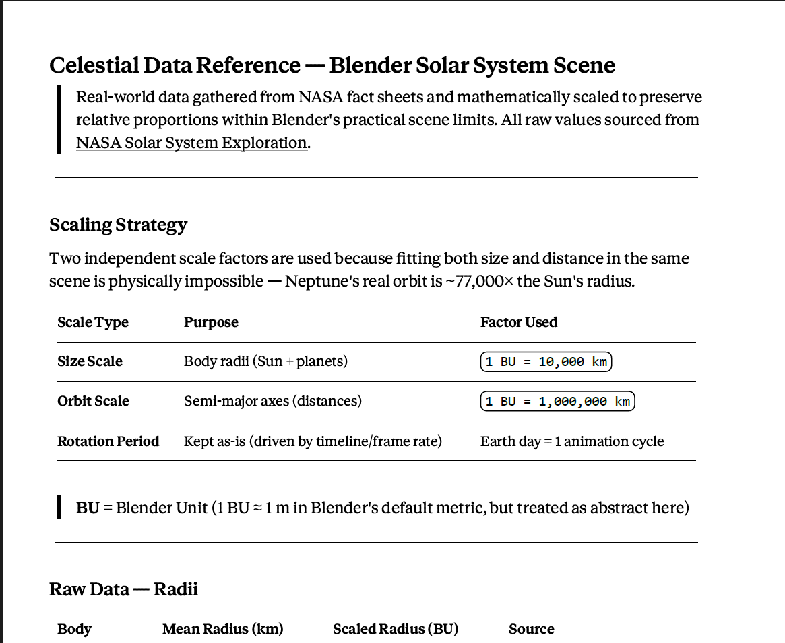
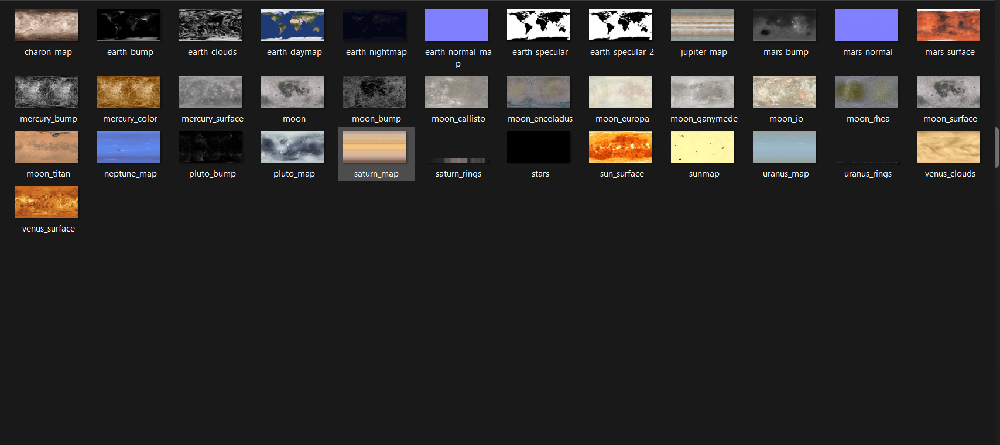
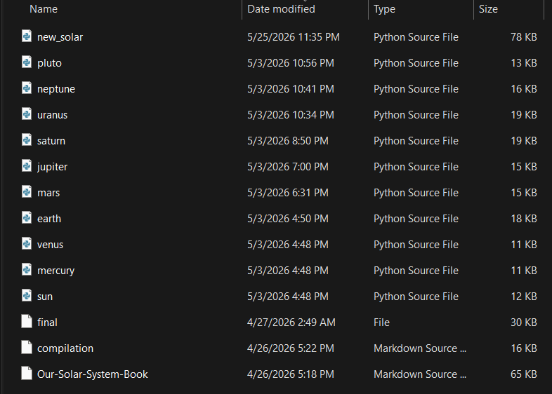
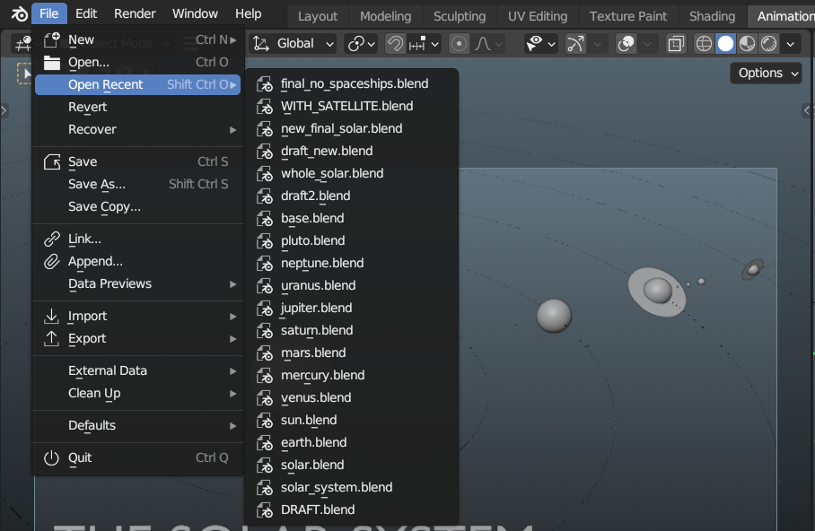
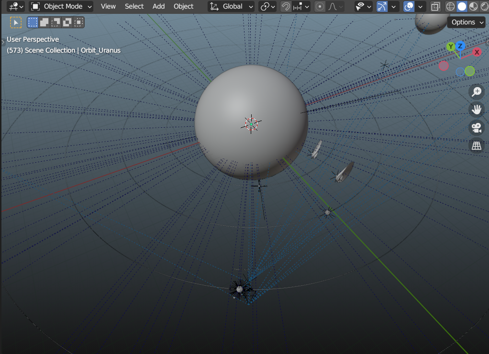
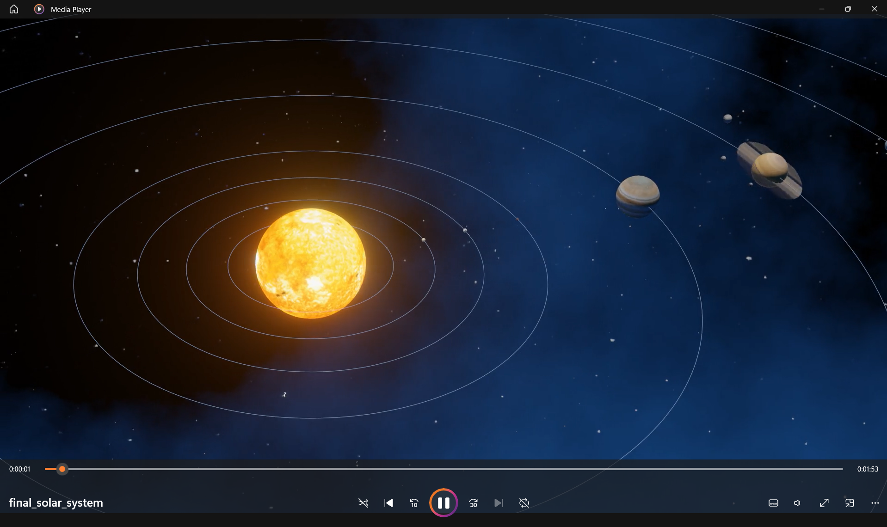

Project 02 — 3D Modeling & Animation
3D Solar System
A fully modeled and animated solar system built in Blender 3.6 LTS, featuring every planet, the Sun, and Pluto — with orbital motion, textures, and Python scripting.
Section 01
About the Project
This project is a 3D simulation of our solar system created entirely within Blender 3.6 LTS. The goal was to model each celestial body with accurate relative sizing, apply realistic PBR texture materials, and script the orbital motion programmatically using Python.
The project demonstrates the integration of artistic 3D modeling with technical scripting, producing a rendered animation that captures the scale and motion of the solar system. Submitted as a major output for the subject Multimedia and Authoring.
Overview
Project Details
Review software tools, render specifications, key system features, PBR texture mappings, and references.
Show Details
Overview
Project Details
Review software tools, render specifications, key system features, PBR texture mappings, and references.
Tools Used
- Blender 3.6 LTS — primary 3D modeling and animation software
- Python 3.11 — scripting orbital mechanics and automation
- NASA texture maps — surface material references
- EEVEE renderer — real-time rendering engine with bloom
Render Info
- Renderer: EEVEE (GPU accelerated)
- Resolution: 1920 × 1080 (1080p)
- Frame rate: 24 FPS
- Total frames: 2,941
- Total render time: ~1 hour 15 minutes
- Average per frame: ~1.55 sec
- Output format: MP4 (H.264)
Key Features
- All 8 planets + Pluto + Sun modeled and textured
- Orbital motion automated via Python script
- Axial tilt applied to each planet
- Sun emission shader with volumetric glow
- Saturn ring system with transparency texture
- HDRI space environment background
Texture Materials
- Sun — emission shader, noise-based surface texture
- Earth — diffuse map, cloud layer, specular water map
- Gas giants — procedural band textures (Jupiter, Saturn)
- Ice giants — tinted emission + diffuse blend (Uranus, Neptune)
- Rocky planets — bump-mapped crater surface textures
- Saturn rings — alpha-mapped ring plane geometry
Texture Credits
- Solar System Scope — primary planet surface maps
- Planet Pixel Emporium — Earth surface, clouds, and bump maps
- DeviantArt — community-created Europa and moon textures
Rendered Animation
The Final Video
Disclaimer: The reference video materials used in this project are for educational purposes only. All rights remain with their respective owners.
How I Did It
Process & Method

Step 01
Research & Fact Scaling
Gather real-world celestial data (radii, orbits, rotations, tilts) and mathematically scale them down to preserve relative proportions within the Blender scene limits.

Step 02
Collect Texture Assets
Download high-resolution surface maps, bump maps, and cloud overlays from Solar System Scope and Planet Pixel Emporium to assign to each planet.

Step 03
Prompt Script for Individual Bodies
Prompt script to write custom Python scripts that automate the generation of meshes, shaders, tilts, and rotation timelines for each planet individually.

Step 04
Build Individual Planets
Execute the scripts inside Blender to programmatically build and animate the Sun, 8 planets, and Pluto in their own dedicated .blend files to finalize their structures first.

Step 05
Rig Camera Tracking via Script
Execute the camera setup script to construct a camera rig and keyframe its focal points, automatically tracking and gliding between individual planet showcases.

Step 06
Compile & Render Whole Solar System
Merge all completed planet files into a master scene (new_final_solar.blend), run the orbit automation, configure the EEVEE renderer, and compile the final 1080p video.
Code
Blender Python Script
The following script automates orbital motion by keyframing each planet's location
based on its orbital period and distance from the Sun.
Show Script
Code
Blender Python Script
The following script automates orbital motion by keyframing each planet's location based on its orbital period and distance from the Sun.
# Loading script...
PBR Materials
Planet Textures
High-resolution texture maps used for each celestial body in the Blender scene. Click a thumbnail to preview, or use the download button to save individual files.
Timeline
Scene Breakdown
The final animation sequence follows the camera rig in solar_system.py: an opening overview, nine planet showcases with short transition windows, and a long closing pullback. Total runtime: 2,941 frames at 24 FPS (~2:03).
Frame 1 – 300 | 0:00 – 0:13
Opening — Deep Space Approach
The camera glides in from a distant view, eases toward the Sun, and fades the orbit lines out before the first planet showcase begins.
Frame 300 – 420 | 0:13 – 0:18
Mercury — First Showcase
Mercury becomes the focus target while its orbit and self-rotation continue in a clean, close framing.
Frame 460 – 540 | 0:19 – 0:23
Venus — Retrograde Close-Up
Venus enters with its cloud layer visible and continues its slower, retrograde spin during the showcase.
Frame 580 – 660 | 0:24 – 0:28
Earth — Planet and Clouds
Earth is shown with its day texture and cloud layer while the motion slows for the camera transition.
Frame 700 – 780 | 0:29 – 0:33
Mars — Red Planet and Moons
Mars is framed with its thin atmosphere and the two moon companions used in the build.
Frame 820 – 900 | 0:34 – 0:38
Jupiter — Gas Giant Pass
Jupiter fills the frame with a stronger showcase distance so the banded atmosphere and scale read clearly.
Frame 940 – 1020 | 0:39 – 0:43
Saturn — Rings in Frame
Saturn is pulled back farther than the other planets so the ring system fits cleanly in the camera view.
Frame 1060 – 1140 | 0:44 – 0:48
Uranus — Sideways Ice Giant
Uranus is shown with its extreme axial tilt and a softer, cooler framing before the outer-system run.
Frame 1180 – 1260 | 0:49 – 0:53
Neptune — Outer Ice Giant
Neptune closes the major-planet sequence with a deep-blue pass and the same orbit-driven motion style.
Frame 1300 – 1380 | 0:54 – 0:58
Pluto — Dwarf Planet Finale
Pluto receives the last close-up before the camera begins the long pullback into the system-wide ending.
Frame 1380 – 2941 | 0:58 – 2:03
Closing — Full System Pullback
The camera eases back to a wide solar-system view, orbit lines return, and the orbital motion ramps so Pluto completes one final revolution.
Age Calculator
How Old Are You on Other Planets?
Each planet has a different orbital period — the time it takes to complete one revolution around the Sun. Enter your age or birthdate to find out how old you would be on each planet.
Age is based on each planet's orbital period relative to Earth's 365.25-day year.
The Solar System
Celestial Bodies
Sun
Star — G-type Main Sequence
—
Center of the System
The Sun is the center of the solar system, supplying the light and energy that drive climates, auroras, and space weather across every planet. Its visible surface is about 5,500°C, while the corona can reach around 5,000,000°C. It also acts as the primary sunlight source for the full solar system simulation.
Mercury
Terrestrial Planet
—
Your age on Mercury
Mercury is the smallest and innermost planet, orbiting the Sun in just 88 days. With almost no atmosphere to trap heat, it has extreme day-to-night temperature changes and a heavily cratered rocky surface. The card also reflects Mercury's near-total lack of atmosphere, keeping the surface fully exposed.
Venus
Terrestrial Planet
—
Your age on Venus
Venus is similar in size to Earth but has a dense carbon-dioxide atmosphere and sulfuric-acid clouds. A runaway greenhouse effect makes it the hottest planet in the solar system. The card also highlights Venus's slow retrograde spin and opaque cloud cover.
Earth
Terrestrial Planet — Our Home
—
Your age on Earth
Earth is the only known world with life, sustained by liquid surface water, a nitrogen-oxygen atmosphere, and a magnetic field that helps shield the planet from harmful solar radiation. It also keeps the Moon as a tidally locked companion and uses Earth's day as the timing baseline for the simulation.
Mars
Terrestrial Planet
—
Your age on Mars
Mars, the Red Planet, is a cold rocky world shaped by volcanoes, canyons, and ancient water activity. It hosts Olympus Mons, the largest volcano in the solar system. The card also points to Phobos and Deimos and keeps Mars wrapped in a thin atmospheric glow.
Jupiter
Gas Giant
—
Your age on Jupiter
Jupiter is the largest planet, a gas giant with powerful storms and intense magnetic fields. Its Great Red Spot is a long-lived storm larger than Earth. It also acknowledges Jupiter's 95 known moons while focusing on the four Galilean satellites in the build.
Saturn
Gas Giant
—
Your age on Saturn
Saturn is a gas giant famous for its bright rings made of ice and rock particles. Despite its huge size, it is the least dense planet and would float in water if a large enough ocean existed. The card also emphasizes Saturn's 26.7-degree axial tilt and ring system with contact shadows.
Uranus
Ice Giant
—
Your age on Uranus
Uranus is an ice giant rich in water, ammonia, and methane ices. It rotates on its side with an extreme axial tilt, giving it unusual seasons unlike any other major planet. It also reflects Uranus's 97.77-degree axial tilt, 255-frame day loop, and five largest moons.
Neptune
Ice Giant
—
Your age on Neptune
Neptune, the outermost major planet, is an ice giant with a deep blue methane-rich atmosphere. It has the fastest winds in the solar system and powerful storm systems. It also includes Triton's retrograde orbit and the planet's thin, dusty ring system.
Pluto
Dwarf Planet
—
Your age on Pluto
Pluto is a dwarf planet in the Kuiper Belt with a complex icy surface and a binary-like relationship with Charon. NASA's New Horizons flyby in 2015 revealed active geology and transformed our understanding of this distant world. It also notes Pluto's binary relationship with Charon, 122.5-degree axial tilt, and faint atmospheric haze.